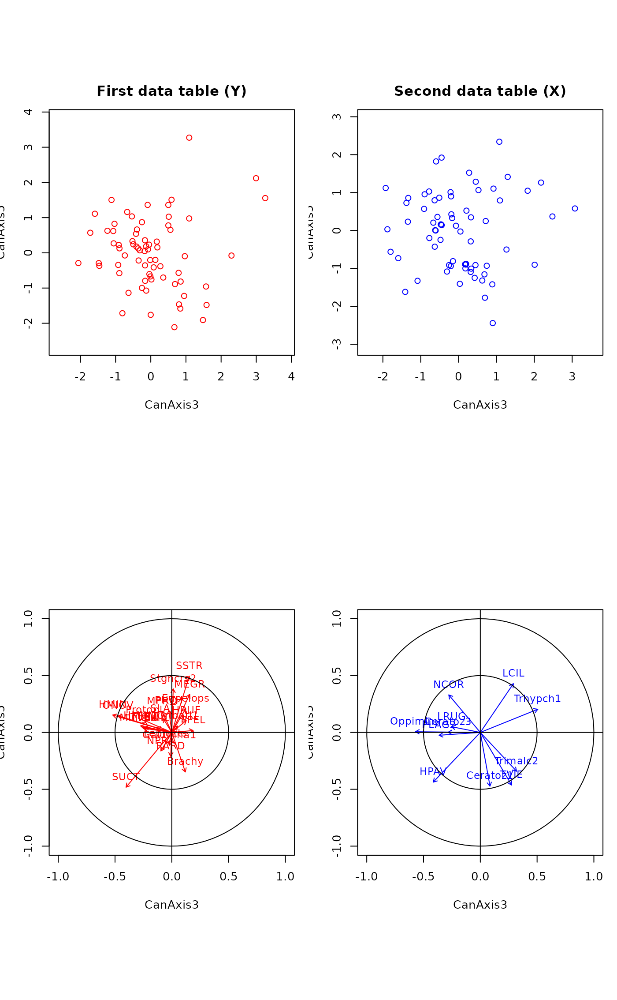
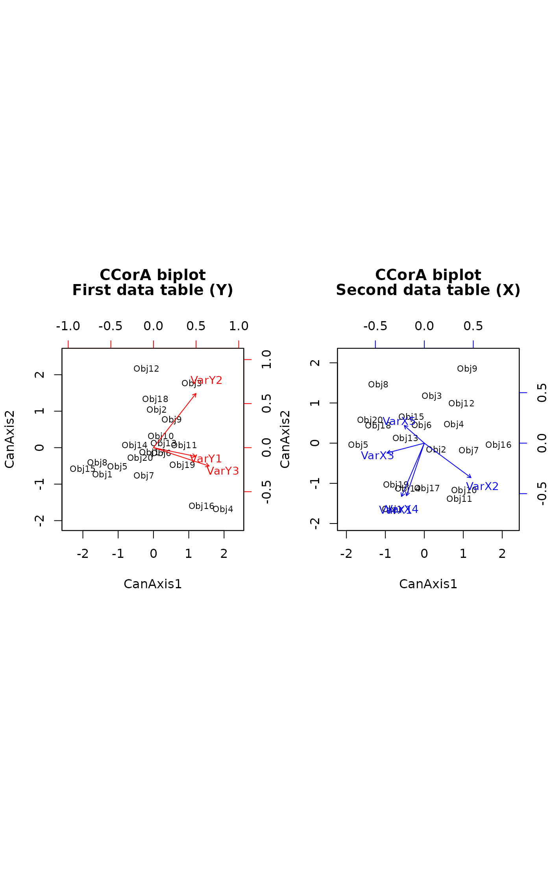

Canonical Correlation Analysis
CCorA.RdCanonical correlation analysis, following Brian McArdle's unpublished graduate course notes, plus improvements to allow the calculations in the case of very sparse and collinear matrices, and permutation test of Pillai's trace statistic.
CCorA(Y, X, stand.Y=FALSE, stand.X=FALSE, permutations = 0, ...) # S3 method for CCorA biplot(x, plot.type="ov", xlabs, plot.axes = 1:2, int=0.5, col.Y="red", col.X="blue", cex=c(0.7,0.9), ...)
Arguments
| Y | Left matrix (object class: |
|---|---|
| X | Right matrix (object class: |
| stand.Y | Logical; should |
| stand.X | Logical; should |
| permutations | a list of control values for the permutations
as returned by the function |
| x |
|
| plot.type | A character string indicating which of the following
plots should be produced: |
| xlabs | Row labels. The default is to use row names, |
| plot.axes | A vector with 2 values containing the order numbers of the canonical axes to be plotted. Default: first two axes. |
| int | Radius of the inner circles plotted as visual references in
the plots of the variables. Default: |
| col.Y | Color used for objects and variables in the first data table (Y) plots. In biplots, the objects are in black. |
| col.X | Color used for objects and variables in the second data table (X) plots. |
| cex | A vector with 2 values containing the size reduction factors
for the object and variable names, respectively, in the plots.
Default values: |
| ... | Other arguments passed to these functions. The function
|
Details
Canonical correlation analysis (Hotelling 1936) seeks linear
combinations of the variables of Y that are maximally
correlated to linear combinations of the variables of X. The
analysis estimates the relationships and displays them in graphs.
Pillai's trace statistic is computed and tested parametrically (F-test);
a permutation test is also available.
Algorithmic note --
The blunt approach would be to read the two matrices, compute the
covariance matrices, then the matrix
S12 %*% inv(S22) %*% t(S12) %*% inv(S11).
Its trace is Pillai's trace statistic.
This approach may fail, however, when there is heavy multicollinearity
in very sparse data matrices. The safe approach is to replace all data
matrices by their PCA object scores.
The function can produce different types of plots depending on the option
chosen:
"objects" produces two plots of the objects, one in the space
of Y, the second in the space of X;
"variables" produces two plots of the variables, one of the variables
of Y in the space of Y, the second of the variables of X in the space of X;
"ov" produces four plots, two of the objects and two of the variables;
"biplots" produces two biplots, one for the first matrix (Y) and
one for second matrix (X) solutions. For biplots, the function passes all arguments
to biplot.default; consult its help page for configuring biplots.
Value
Function CCorA returns a list containing the following elements:
Pillai's trace statistic = sum of the canonical eigenvalues.
Canonical eigenvalues. They are the squares of the canonical correlations.
Canonical correlations.
Ranks of matrices Y and X.
Bimultivariate redundancy coefficients (R-squares) of RDAs of Y|X and X|Y.
RDA.Rsquares adjusted for n and the number
of explanatory variables.
Number of permutations.
Parametric probability value associated with Pillai's trace.
Permutational probability associated with Pillai's trace.
Object scores in Y biplot.
Object scores in X biplot.
Scores of Y variables in Y biplot, computed as cor(Y,Cy).
Scores of X variables in X biplot, computed as cor(X,Cx).
cor(Y,Cy) available for plotting variables Y in space of X manually.
cor(X,Cx) available for plotting variables X in space of Y manually.
A list of control values for the permutations
as returned by the function how.
Call to the CCorA function.
References
Hotelling, H. 1936. Relations between two sets of variates. Biometrika 28: 321-377.
Legendre, P. 2005. Species associations: the Kendall coefficient of concordance revisited. Journal of Agricultural, Biological, and Environmental Statistics 10: 226-245.
Examples
# Example using two mite groups. The mite data are available in vegan data(mite) # Two mite species associations (Legendre 2005, Fig. 4) group.1 <- c(1,2,4:8,10:15,17,19:22,24,26:30) group.2 <- c(3,9,16,18,23,25,31:35) # Separate Hellinger transformations of the two groups of species mite.hel.1 <- decostand(mite[,group.1], "hel") mite.hel.2 <- decostand(mite[,group.2], "hel") rownames(mite.hel.1) = paste("S",1:nrow(mite),sep="") rownames(mite.hel.2) = paste("S",1:nrow(mite),sep="") out <- CCorA(mite.hel.1, mite.hel.2) out#> #> Canonical Correlation Analysis #> #> Call: #> CCorA(Y = mite.hel.1, X = mite.hel.2) #> #> Y X #> Matrix Ranks 24 11 #> #> Pillai's trace: 4.573009 #> #> Significance of Pillai's trace: #> from F-distribution: 0.0032737 #> CanAxis1 CanAxis2 CanAxis3 CanAxis4 CanAxis5 CanAxis6 #> Canonical Correlations 0.92810 0.82431 0.81209 0.74981 0.70795 0.65950 #> CanAxis7 CanAxis8 CanAxis9 CanAxis10 CanAxis11 #> Canonical Correlations 0.50189 0.48179 0.41089 0.37823 0.28 #> #> Y | X X | Y #> RDA R squares 0.33224 0.5376 #> adj. RDA R squares 0.20560 0.2910 #># Example using random numbers. No significant relationship is expected mat1 <- matrix(rnorm(60),20,3) mat2 <- matrix(rnorm(100),20,5) out2 = CCorA(mat1, mat2, permutations=99) out2#> #> Canonical Correlation Analysis #> #> Call: #> CCorA(Y = mat1, X = mat2, permutations = 99) #> #> Y X #> Matrix Ranks 3 5 #> #> Pillai's trace: 0.480458 #> #> Significance of Pillai's trace: #> from F-distribution: 0.90606 #> based on permutations: 0.94 #> Permutation: free #> Number of permutations: 99 #> #> CanAxis1 CanAxis2 CanAxis3 #> Canonical Correlations 0.64421 0.23458 0.1021 #> #> Y | X X | Y #> RDA R squares 0.214302 0.0839 #> adj. RDA R squares -0.066305 -0.0879 #>